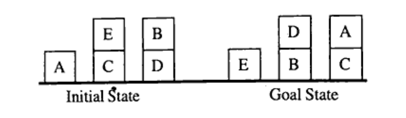
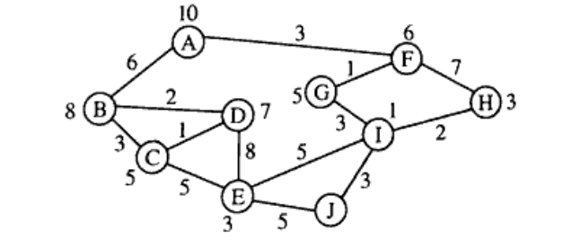
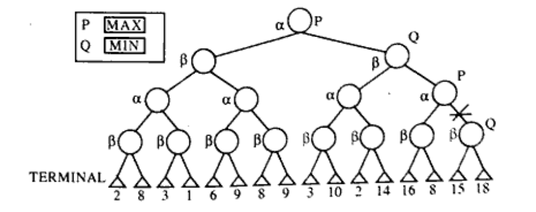

B.Tech. III Semester
Examination, December 2023
Grading System (GS)
Max Marks:
70 | Time: 3 Hours
Note:
i) Attempt any five questions.
ii) All questions carry equal marks.
a) Four approaches of AI are Acting Humanly, Thinking humanly, Thinking rationally and Acting rationally. Discuss feasibility of the approaches in current scenario. Which approach is best suitable for rational agent and why? (Unit 1)
b) Explain how $A^{*}$ search different with $AO^{*}$ search technique. Discuss the advantage and disadvantage of both the techniques? (Unit 1)
a) State the difference between informed search and uninformed search with suitable example. (Unit 1)
b) For the Blocks World problem given below, use Hill Climbing to show the next 3 best moves. State and use a suitable global heuristic. (Unit 1)

a) Consider the following facts:
i) Steve likes easy courses
ii) Science courses are hard
iii) All the courses in the CSE department are easy
iv) CS3101 is a CSE department course
1) Translate these into predicate logic.
2) Convert them into clausal form.
3) Using resolution prove "What course would Steve like". (Unit 2)
b) Describe the difference between Depth First Search (DFS) and Breath First Search (BFS) with suitable example. (Unit 1)
a) What are the key advantages of using Bayes theorem compared to other probability frameworks? (Unit 3)
b) Consider the following graph. The numbers written on edges represent the distance between the nodes. The numbers written on nodes represent the heuristic value. Find the most cost-effective path to reach from start state A to final state J using $A^{*}$ Algorithm. (Unit 1)

a) Write short notes on:
i) Propositional logic
ii) First Order Predicate logic (Unit 2)
b) How would you define Natural Language Processing (NLP) and its significance in today's technological landscape? (Unit 4)
a) What are the key advantage and limitations of expert systems in the field of Artificial Intelligence? (Unit 5)
b) What are the main differences between forward chaining and backward chaining in expert systems, and when would you prefer to use each approach? (Unit 3)
a) Consider a state space where the start state is number 1 and the successor function for state n returns two states, numbers $2n$ and $2n+1$.
i) Draw the portion of the state space for states 1 to 15.
ii) Suppose the goal state is 11. List the order in which nodes will be visited for breadth-first search, depth-first search with limit 3. (Unit 1)
b) The heuristic values for each state are shown below. Given these values, draw a diagram in that illustrates the search tree of explored states, using $A^{*}$ search (the path cost is still a unit cost). Indicate the calculated cost at each node in the tree. (Unit 1)
| A: 9 | G: 3 |
| B: 4 | H: 5 |
| C: 5 | I: 8 |
| D: 7 | J: 2 |
| E: 3 | K: 0 |
| F: 10 | L: 7 |
a) Consider following tree below:

Apply $\alpha-\beta$ pruning and identify the all prune node for the given above tree. (Unit 4)
b) What are the critical factors to consider when designing and developing an effective expert system? (Unit 5)